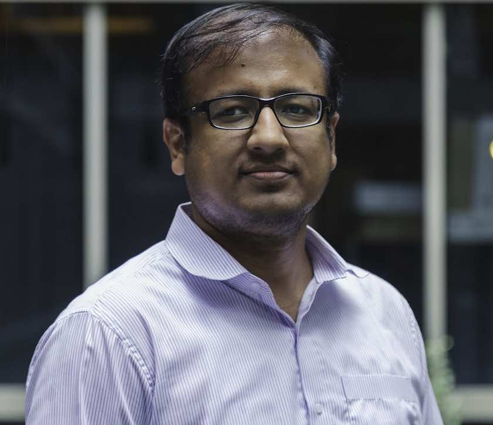

Irfan Ahmed
Associate Professor
Department of Computer Science,
College of Engineering,
Virginia Commonwealth University,
Richmond, VA - 23284

I am an Engineering Foundation Endowed Associate Professor of Computer Science at
Virginia Commonwealth University (VCU). I am also a VCU NIRA Scholar,
a Fellow of the American Academy of Forensic Sciences, and a Faculty Fellow of
VCU Cybersecurity Center. Before VCU,
I was a Canizaro-Livingston Endowed Assistant Professor in Cybersecurity
at the University of New Orleans (UNO), New Orleans, LA.
I run the Security and Forensics Engineering (SAFE) Research Lab at VCU.
My research interests are broadly in cybersecurity, currently
focusing on digital forensics, malware, cyber-physical systems, and cybersecurity education.
I am a recipient of the ORAU Ralph E. Powe Junior Faculty Enhancement Award,
an Outstanding Research Award from the American Academy of Forensic Sciences (AAFS),
the UNO's Early Career Research Prize, the Dean's Faculty Fellow Award at the VCU College of Engineering, USCYBERCOM Commander Award, and USCYBERCOM Guardian Award.
My research work has been supported in part by the NSF, NSA, DHS, DOE, ONR, ARO, ORAU, USCYBERCOM and
VA CCI, and has received three Best Paper Awards at DFRWS'22, ISC'13 and ICRC'11, three Best Student Paper Awards at DFRWS'23, DFRWS'22 and DFRWS'20, and
three Outstanding/Best Poster Awards at CODASPY'16, ACSAC'23, DFRWS'24.
Contact me:
- Office Address: Engineering Research Building, Room 2323, 70 S Madison St, Richmond, VA - 23220
- Email: iahmed3@vcu.edu (best way to contact me)
- Tel No.: (+1) 804-827-2561
Connect with me on Social Media:
Google Scholar:
Experiential Learning Programs:
Research
Research Funding:
- Funding Sources: DHS, NSF , NSA, DOE, AFRL, ARO, ONR, ORAU, VA-CCI, UNO, LA-BoR
- Total Funding: $10,597,296 (Approx. $10.58 Million)
- My Share: $5,458,781 (Approx. $5.45 Million)
- Lead/Sole/Institute PI: $4,575,047 (Approx. $4.56 Million)
- Co-PI: $883,734 (Approx. $0.84 Million)
Selected Publications [Full List]:
- Industrial Control System Security (PLCs, SCADA systems, digital forensics, vulnerability discovery and exploit development, and network protocol and binary analysis)
- [HOST'25] WaveSleuth: Retrospective PLC Memory for Anomaly Detection in Industrial Control Systems
- [HOST'24] Charlie, Charlie, Charlie on Industrial Control Systems: PLC Control Logic Attacks by Design, Not by Chance
- [ACSAC ICSS'23] vPLC: A scalable PLC testbed for IIoT security research
- [DFRWS'23] PREE: Heuristic Builder for Reverse Engineering of Network Protocols in Industrial Control Systems (Best Student Paper Award)
- [S&P J.'23] How are industrial control systems insecure by design? A deeper insight into real-world PLCs
- [HOST'23] Gadgets of Gadgets in Industrial Control Systems: Return Oriented Programming Attacks on PLCs
- [CSR'22] Control Logic Obfuscation Attack in Industrial Control Systems
- [DFRWS'22] PEM: Remote Forensic Acquisition of PLC Memory in Industrial Control Systems (Best Paper Award)
- [DFRWS'22] Memory Forensic Analysis of a Programmable Logic Controller in Industrial Control Systems (Best Student Paper Award)
- [DFRWS'21] JTAG-based PLC Memory Acquisition Framework for Industrial Control Systems
- [WOOT'21] Empirical Study of PLC Authentication Protocols in Industrial Control Systems
(Resulted in 7 CVEs: CVE-2021-32980, CVE-2021-32984, CVE-2021-32986, CVE-2021-32982, CVE-2021-32978, CVE-2021-32926, and CVE-2020-15791)
- [ICCIP'21] Attacking IEC-61131 Logic Engine in Programmable Logic Controllers in Industrial Control Systems
(Resulted in CVE-2023-2310)
- [DFRWS'20] Control Logic Forensics Framework using Built-in Decompiler of
Engineering Software in Industrial Control Systems (Best Student Paper Award)
- [SEC'19] Control Logic Injection Attacks on Industrial Control Systems
(Resulted in three CVEs: CVE-2018-7790, CVE-2018-7791, and CVE-2018-7792)
- [ISC'19] Automated Reconstruction of Control Logic for Programmable Logic Controller Forensics
- [DIMVA'19] Overshadow PLC to Detect Remote Control-Logic Injection Attacks
- [NDSS BAR'19] CLIK on PLCs! Attacking Control Logic with Decompilation and Virtual PLC
- [CODASPY'18] Denial of Engineering Operations Attacks in Industrial Control Systems
- [S&P J.'17] Programmable Logic Controller Forensics
- [DFRWS'17] SCADA Network Forensics of the PCCC Protocol
- [ACSAC ICSS'16] A SCADA System Testbed for Cybersecurity and Forensic Research and Pedagogy
- [Computer'12] SCADA systems: Challenges for Forensic Investigators
- Additive Manufacturing Security (3D printers, side channel, vulnerability discovery and exploit development, and digital forensics)
- [HOST'25] WattShield: A Power Side-Channel Framework for Detecting Malicious Firmware in Fused Filament Fabrication
- [ACM TCPS'25] Sabotaging material extrusion-based 3D printed parts through low-magnitude kinetic manipulation attacks
- [ACSAC'24] BioSaFe: Bioprinting Security Framework for Detecting Sabotage Attacks on Printability and Cell Viability
- [WOOT'24] SOK: 3D Printer Firmware Attacks on Fused Filament Fabrication
- [ICCIP'24] Security Assessment of an LBP16 Protocol-based CNC Machine
(Resulted in six CVEs: CVE-2024-22809, CVE-2024-22815, CVE-2024-22813, CVE-2024-22811, CVE-2024-22808, and CVE-2024-22807)
- [EuroS&P'23] SOK: Side Channel Monitoring for Additive Manufacturing - Bridging Cybersecurity and Quality Assurance Communities
- [DFRWS'23] FRoMEPP: Digital Forensic Readiness Framework for Material Extrusion based 3D Printing Process
- [ICCIP'22] Low-magnitude Infill Structure Manipulation Attacks on FFF-based 3D Printers
- [Additive Manufacturing Journal'21] Dynamic-thermal and Localized Filament-kinetic Attacks on Fused Filament Fabrication based 3D Printing Process (Impact Factor: 11.00 in 2021)
- [ICCPS'21] Spatiotemporal G-code Modeling for Secure FDM-based 3D Printing
- Digital Forensics and Malware (cloud forensics, and OS kernel, hypervisor, virtual machines and containers)
- [DFRWS'22] Forensic Investigation of Instant Messaging Services on Linux OS: Discord and Slack as Case Studies
- [INTERPOL Digital 4N6 Pulse'19] Cloud Forensics - A True Game Changer
- [Book Chapter'18] Analysis of Cloud Digital Evidence
- [DFRWS'18] Leveraging Relocations in Kernel ELF-binaries for Linux Kernel Version Identification
- [Digital Investigation, Elsevier'16] Cloud Forensics-Tool Development Studies & Future Outlook
- [IFIP Forensics'16] Forensic Acquisition of Cloud Drives
- [WiSec'16] Don't Touch that Column - Portable, Fine-Grained Access Control for Android's Native Content Providers
- [ACSAC PPREW'15] OpSeq - Android Malware Fingerprinting
- [CODASPY'15] Robust Fingerprinting for Relocatable Code
- [DFRWS'14] Image-Based Kernel Fingerprinting
- [ISC'13] Integrity Checking of Function Pointers in Kernel Pools via Virtual Machine Introspection (Best Paper Award)
- [IFIP Forensics'13] Rule-based Integrity Checking of Interrupt Descriptor Table in Cloud Environments
- [ACSAC LAW'12] Atomizer: Fast, Scalable and Lightweight Heap Analyzer for Virtual Machines in a Cloud Environment
- [ICPP CloudSec'12] ModChecker: Kernel Module Integrity Checking in the Cloud
- [IFIP Forensics'11] Fast Content-based File-type Identification
- Cybersecurity Education (pedagogical techniques e.g,. peer instruction, concept maps, and problem-based learning, and hands-on learning tools)
- [IEEE Access'21] Cronus: An Automated Feedback Tool for Concept Maps
- [IEEE Access'21] Automated Waterloo Rubric for Concept Map Grading
- [SIGCSE'19] Evaluation of Peer Instruction for Cybersecurity Education
- [SIGCSE'19] Topological Scoring of Concept Maps for Cybersecurity Education
- [IEEE S&P'18] Peer Instruction Teaching Methodology for Cybersecurity Education
- [SIGCSE'18] Using Virtual Machine Introspection for Operating Systems Security Education
- [USENIX ASE'17] Peer Instruction for Digital Forensics
- [USENIX ASE'16] Development of Peer Instruction Questions for Cybersecurity Education
Honors and Awards:
- Engineering Foundation Endowed Professorship, Virginia Commonwealth University, December 2024
- Best Poster Award, 24th Annual Digital Forensics Research Conference (DFRWS US’24), July 2024, Baton Rouge, Louisiana
- USCYBERCOM Commander Award by Four-star General Timothy D. Haugh, the Commander of US Department of Defense Cyber Command. The award ceremony was organized at US Naval Academy, Annapolis, MD, April 2024
- USCYBERCOM Guardian Award by US Department of Defense Cyber Command. The award ceremony was organized at US Naval Academy, Annapolis, MD, April 2024
- USCYBERCOM Challenge Coin by Four-star General Timothy D. Haugh, the Commander of US Department of Defense Cyber Command. The award ceremony was organized at US Naval Academy, Annapolis, MD, April 2024
- Dean's Faculty Fellow Award, VCU College of Engineering, March 2024
- Fellow of the American Academy of Forensic Sciences (AAFS), Conferred at the 76th AAFS Annual Meeting in Denver CO, Feb 2024
- Best Poster Award, 39th Annual Computer Security Applications Conference (ACSAC), Dec 2023, Austin, TX
- National/International Recognition Award (NIRA) Scholar, Virginia Commonwealth University, Oct 2023.
(NIRA is a university-level award to recognize VCU's leading scholars.)
- Best Student Paper Award, 23rd Annual Digital Forensics Research Conference (DFRWS US’23), hosted at Johns Hopkins University, Baltimore, MD, July 2023
- 2022 CCI Innovation Award, Virginia Commonwealth Cyber Initiative (CCI), 2023
- Best Paper Award, 9th Annual Digital Forensics Research Conference Europe (DFRWS EU'22), hosted at the University of Oxford, UK, 2022
- Best Student Paper Award, 9th Annual Digital Forensics Research Conference Europe (DFRWS EU'22), hosted at the University of Oxford, UK, 2022
- Best Student Paper Award, 20th Annual Digital Forensics Research Conference (DFRWS US’20), USA, 2020
- ORAU Ralph E. Powe Junior Faculty Enhancement Award, Oak Ridge Associated Universities (ORAU), 2019
- One of the First Ten Contributors to the NSA's National Cybersecurity Curriculum Program (NCCP), 2018
- Canizaro-Livingston Endowed Professorship in Cybersecurity, University of New Orleans, New Orleans, LA, 2017
- Early Career Research Prize, University of New Orleans, 2016
(A university-level award given only to one junior faculty member each year based on the achievements in teaching, research, and service.)
- Outstanding Poster Award, 6th ACM Conference on Data and Application Security and Privacy (CODASPY’16), 2016
- Outstanding Research Award, 66th Annual Meeting of the American Academy of Forensic Sciences, 2014
- Best Paper Award, 16th Information Security Conference (ISC’13), Dallas Texas, 2013
- Best Paper Award, International Cyber Resilience Conference, Perth, Australia, 2011
Software/Hardware Vulnerability Disclosures:
- CVE-2024-51330, UltiMaker Cura
- CVE-2024-22807, Tormach xsTECH CNC Router
- CVE-2024-22808 Tormach xsTECH CNC Router
- CVE-2024-22811 Tormach xsTECH CNC Router
- CVE-2024-22813 Tormach xsTECH CNC Router
- CVE-2024-22815 Tormach xsTECH CNC Router
- CVE-2024-22809 PathPilot Controller
- CVE-2023-2310, Schweitzer Engineering Laboratories (SEL) RTAC 3505
- CVE-2021-32980, Automation Direct CLICK PLC
- CVE-2021-32984, Automation Direct CLICK PLC
- CVE-2021-32986, Automation Direct CLICK PLC
- CVE-2021-32982, Automation Direct CLICK PLC
- CVE-2021-32978, Automation Direct CLICK PLC
- CVE-2021-32926, Rockwell Automation Micro800 and MicroLogix 1400 PLCs
- CVE-2020-15791, Siemens S7-300 and S7-400 PLCs
- CVE-2018-7790, Schneider Electric Modicon M221 PLC
- CVE-2018-7791, Schneider Electric Modicon M221 PLC
- CVE-2018-7792, Schneider Electric Modicon M221 PLC
Research Group:
- Postdocs:
- Wooyeon Jo, Aug 2022 - to-date
- Hyunguk Yoo, Aug 2017 - July 2018
- PhD Students:
- Badreddin Alhabbal, Aug 2024 - to-date
- Muhammad Shaharyar Yaqub, Aug 2023 - to-date
- Yahya Forihat, Jan 2023 - to-date
- Allison Sands, Jan 2023 - to-date
- Hala Ali, Jan 2023 - to-date
- Nehal Ameen, Aug 2022 - to-date
- Ashwini Vasudev, Aug 2022 - to-date
- Muhammad Ahsan, Aug 2021 - to-date
- Adeen Ayub, Jan 2020 - July 2024
- Muhammad Haris Rais, Jan 2019 - May 2023
- Syed Ali Qasim, Aug 2017 - July 2023
- Aisha Ibrahim Ali-Gombe, August 2013 - May 2017
Teaching
- CMSC 654: Memory and Malware Forensics
- CMSC 414: Computer and Network Security
- CSCI 4621: Introduction to Computer Security
- CSCI 6627: Industrial Control System Security
- CSCI 4623: Computer Forensics
- CSCI 6621: Topics in Network Security and Forensics
- CSCI 4311: Computer Networks
- CSCI 4401: Operating System
Service
- Conference Organization:
- Program chair, ACSAC Industrial Control System Security (ICSS) Workshop, 2015-2024
- Program chair, ACSAC Malware Memory Forensics Workshop (MMF), 2014
- General co-chair, 10th EAI International Conference on Digital Forensics & Cyber Crime (ICDF2C), 2018, New Orleans
- Technical Program Committee (TPC) Member:
- International Workshop on Additive Manufacturing Security (AMSec) with ACM CCS -- 2022
- ACM Conference on Data and Application Security and Privacy (CODASPY) -- 2019-2021
- Digital Forensics Research Conference (DFRWS USA) -- 2015, 2016, 2020-2022
- Digital Forensics Research Conference (DFRWS Europe) -- 2021
- IEEE International Conference on Big Data (IEEE BigData) -- 2019-2020
- ACM Technical Symposium on Computer Science Education (SIGCSE) -- 2017-2021
- Annual Conference on Innovation and Technology in Computer Science Education (ITiCSE) -- 2020
- International Conference on Smart City and Informatization (iSCI) -- 2019-2020
- International Conference on Internet Monitoring and Protection (ICIMP) -- 2018-2019
- International Conference on Digital Forensics \& Cyber Crime (ICDF2C) -- 2013-2018
- International Conference on High Performance Computing and Communications (HPCC) -- 2014
- International Conference on Emerging Technologies (ICET) -- 2012-2013, 2017
- Annual Cyber and Information Security Research Conference (CISRC), held at Oak Ridge National Laboratory -- 2018
- International Workshop on Cyber-Physical Systems (IWCPS), held with IEEE TrustCom -- 2018
- International Conference on Cyber-Technologies and Cyber-Systems (CYBER) -- 2018
- The Northwest Cybersecurity Symposium at Pacific Northwest National Laboratory (Cybersec) -- 2020
- Editorial Work:
- Review Editor, Cybersecurity and Privacy Section, In Frontiers in Big Data, 2018~
- Guest Editor, Special Issue on SCADA and Control System Security, In International Journal of Information Security (IJIS), Springer, Vol. 11, No. 4, August 2012
- Guest Editor, Special Issue on Applications of Machine Learning Techniques on Intrusion Detection and Digital Forensics, In Security and Communication Networks Journal, Wiley, May 2011
- Funding Proposal Reviewer:
- NNSA Minority Serving Institution Partnership Program (MSIPP), 2020-22
- ORAU Ralph E. Powe Junior Faculty Award, 2020
- DHS Office of University Programs for Criminal Investigations and Network Analysis (CINA), 2019
- DHS Office of University Programs for Terrorism Prevention and Counterterrorism Research (TPCR) Center of Excellence (COE), 2019
- UTSA Limited Submission for Department of Defense's Historically Black Colleges and Universities/Minority Institutions (HBCU/MI) Science Program for basic research, 2019
- Florida Center for Cybersecurity - Collaborative Seed Awards and Capacity Building Awards, 2018-2020
- UTSA Limited Submission for the NSF Major Research Instrumentation (MRI), 2018
- UTSA Limited Submission for Johnson & Johnson Scholars Program, 2018
- DHS Scientific Leadership Awards at Minority Serving Institutions, 2016
- External Cybersecurity Curriculum Reviewer:
- Chair, External Curriculum Reviewer Team, Master of Science (MS) in Cybersecurity Engineering, University of New Hampshire, 2019
- External Reviewer, NSA National Cybersecurity Curriculum (NCCP) Program - Two courses on the Cybersecurity of Industrial Control Systems, 2018
- Panel Moderator and Panelist:
- Panelist, "Infrastructure Cybersecurity: Industry, Government, and Academia Viewpoints", University of New Orleans Engineering Forum, and Southeast Symposium on Contemporary Engineering Topics (SSCET), New Orleans LA, Sept 2017
- Moderator, a panel on "SCADA System Security: Challenges and Future Directions", Annual Computer Security Applications Conference (ACSAC), New Orleans LA, Dec 2014